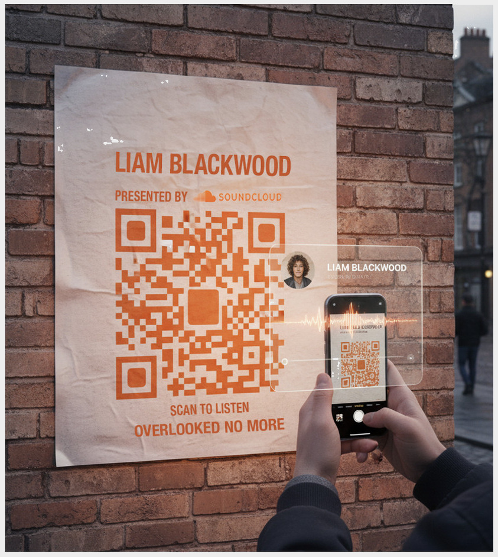
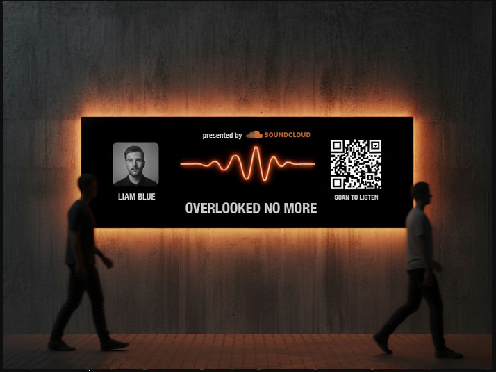
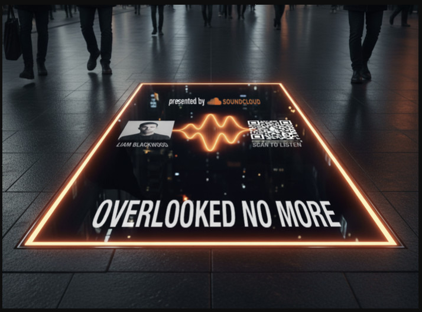
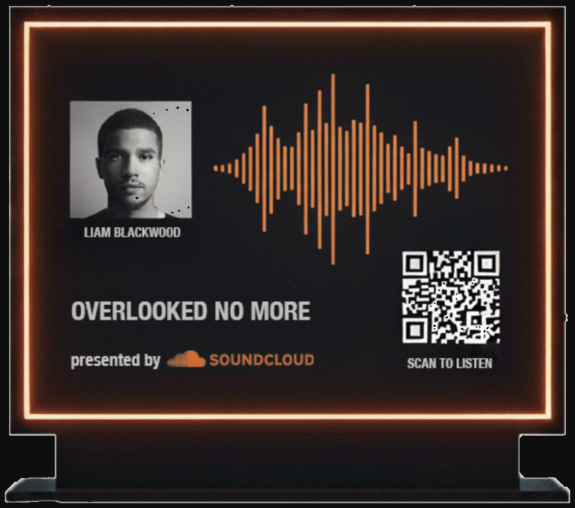
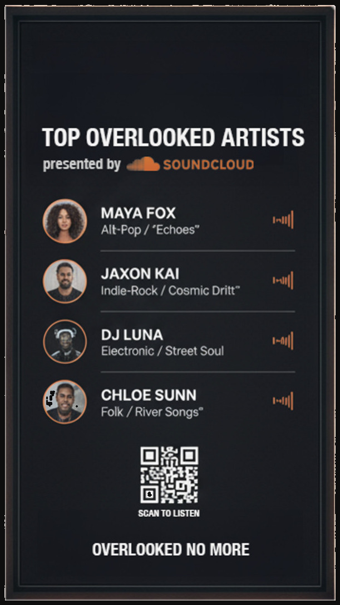
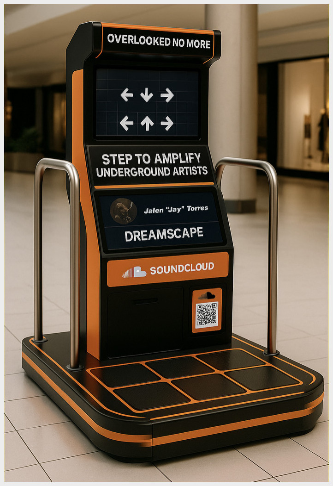
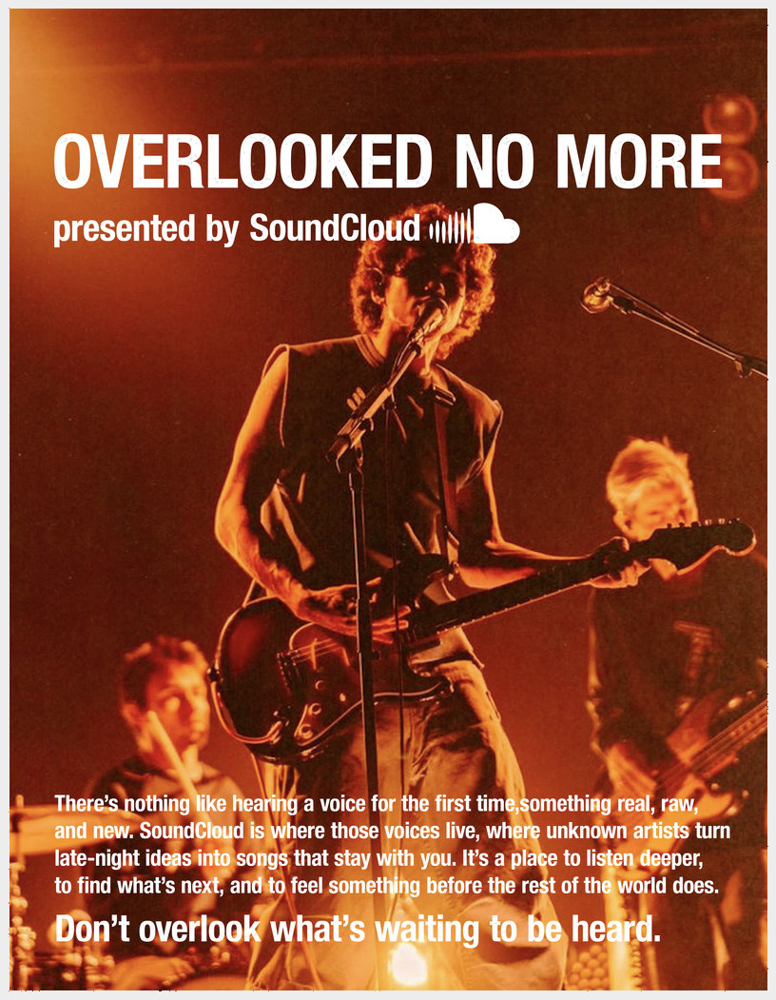
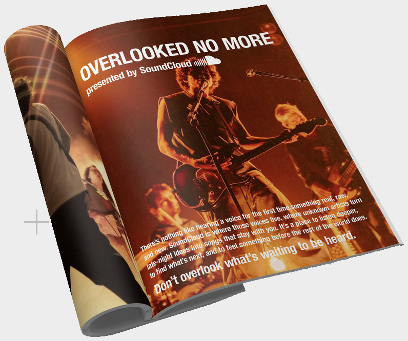
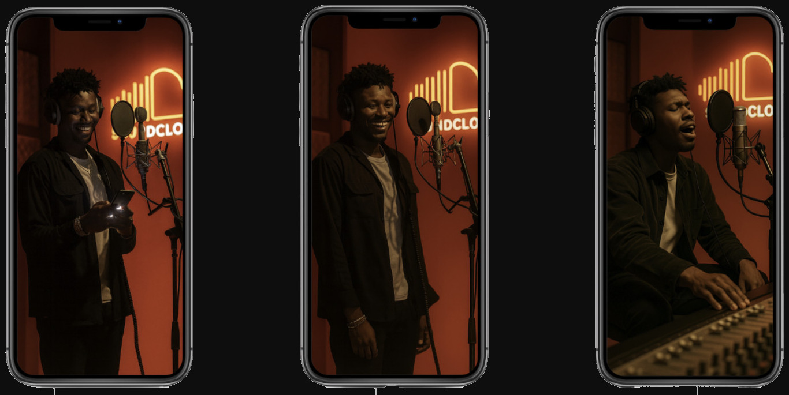

SoundCloud
Clouds We Overlook

Discovery is SoundCloud’s whole case, and discovery is the one thing you cannot put on a poster.
Every platform says it has music nobody has heard yet. Said out loud it is a claim, and a claim about undiscovered artists is worth nothing without one. The category advertises the library. Nobody advertises the artist.
Overlooked no more.
Stop advertising the platform and advertise one unknown artist at a time, by name, on real media in real cities. Every piece carries a face, a waveform and a code. Scanning it does not open a landing page; it opens that artist’s profile, already playing.
The media stops being a message about discovery and becomes the moment of it. Give an unknown a billboard and the claim proves itself.
The billboards
One artist, their waveform drawn at the scale of a building, and a code that plays them. The same unit works lit on a wall or projected onto the floor of a station concourse, where people are already looking down at a screen.




Step to amplify
The piece I would fight for. A dance pad in a shopping centre, built like an arcade cabinet: the harder the crowd plays, the further that artist climbs. It turns a passive claim into something a stranger physically does on behalf of somebody they have never heard of, in the least likely room for underground music there is.

Where the campaign gets to argue at length rather than in six words. Shot in the same amber the rest of the work is lit in, and closing on the line the whole thing rests on: don’t overlook what’s waiting to be heard.


Bought on Spotify
The audio spot runs as a Spotify ad. If the argument is that there is music you are not being served, the place to make it is inside the service not serving it, in the gap between two songs an algorithm chose for you.

Nominated by SCAD for an American Advertising Federation award. What I would keep from it is the discipline of the mechanic: every single piece, down to the audio spot, ends somewhere you can press play. A campaign about discovery that you cannot act on is just a campaign about itself.